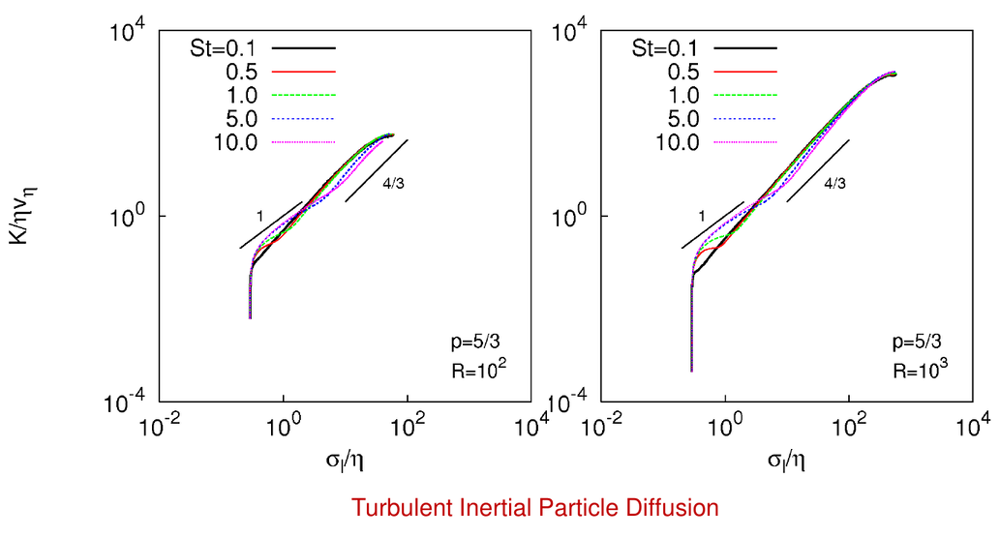
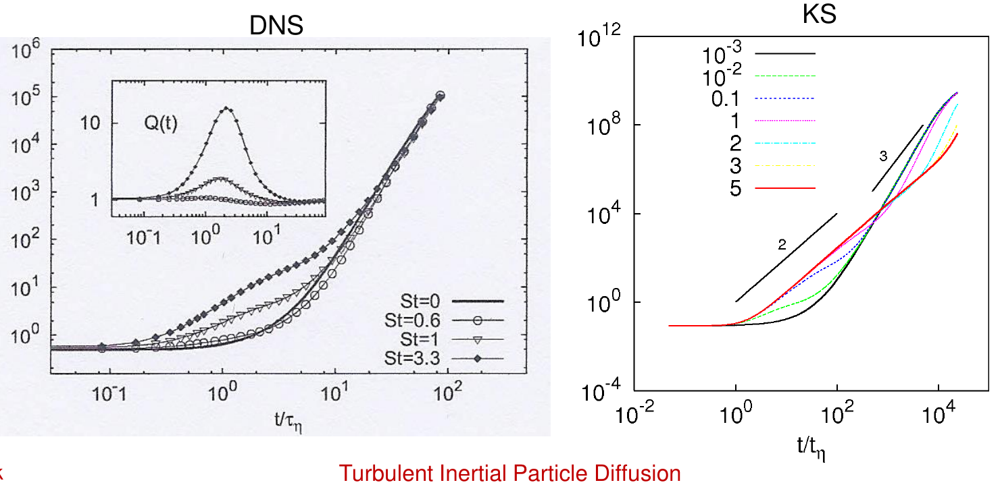

The transport and dispersion of inertial particles in turbulent flows
is a fundamental problem in geophysical and environmental sciences,
with applications ranging from atmospheric dust transport and cloud
microphysics to pollutant dispersion.
Unlike ideal fluid tracers, inertial particles possess finite mass and
respond to the surrounding flow with a delay characterized by a particle
response time. This inertia leads to preferential concentration,
clustering, and modified diffusion behavior.
In this project, we numerically investigate particle pair diffusion in
homogeneous turbulence under the Stokes drag approximation. The focus is
on understanding how inertia, quantified by the Stokes number, alters the
classical Richardson scaling observed for fluid particle pairs.
Particle motion in the geosciences: examples of particle-laden flows,
including long-range atmospheric dust transport and dense particulate
clouds driven by turbulent motion.
Governing Equation
The motion of a small, spherical inertial particle in the Stokes drag
limit is governed by the coupled system:
where $\mathbf{x}(t)$ is the particle position, $\mathbf{v}(t)$ is the
particle velocity, and $\mathbf{u}(\mathbf{x},t)$ is the turbulent fluid
velocity field.
$$
\mathrm{St} = \frac{\tau_p}{\tau_\eta},
$$
where $\tau_\eta$ is the Kolmogorov time scale.
Numerical Method: Fourth-Order Runge–Kutta
The governing equations are integrated using the classical fourth-order
Runge–Kutta (RK4) method, an explicit time-stepping scheme that offers
high accuracy and stability for smooth dynamical systems.
For a general ordinary differential equation $\dot{y} = f(t, y)$, the RK4
update from time $t_n$ to $t_{n+1} = t_n + \Delta t$ is given by:
Ensembles of particle trajectories are computed for different Stokes
numbers. The primary quantity of interest is the mean square separation
$\langle l^2(t) \rangle$, which characterizes particle pair diffusion.

Scaling behavior of inertial particle pair diffusion for different Stokes numbers and Reynolds numbers, highlighting deviations from classical Richardson scaling.

Comparison of particle pair separation growth obtained from Direct Numerical Simulations (DNS) and Kinematic Simulations (KS), showing inertia-dependent diffusion regimes.
The results reveal distinct dispersion regimes. At early times and small separations,
inertia dominates and leads to non-Richardson behavior. At later times, particles
gradually recover tracer-like diffusion.
Conclusion
Inertial particle pair diffusion in turbulent flows was investigated using a
Lagrangian framework combined with fourth-order Runge–Kutta time integration.
Particle inertia significantly modifies dispersion at small scales, leading
to deviations from classical Richardson scaling.
At larger separations and longer times, particle dynamics gradually approach
tracer-like turbulent diffusion.
The numerical framework can be extended to include additional forces and more
realistic turbulence models in future work.